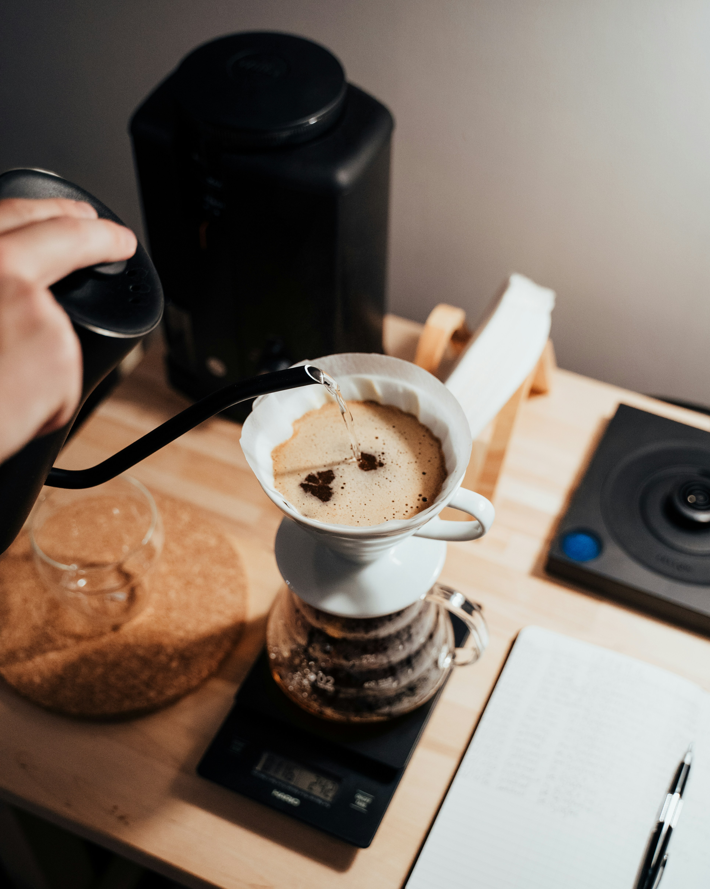

V60
El V60 es un método de filtrado manual que permite obtener un café limpio, aromático y delicado.
ORIGEN Café
En ORIGEN Café creemos que cada método de preparación permite descubrir diferentes aromas, sabores y texturas. Conocé algunas de nuestras técnicas favoritas.

El V60 es un método de filtrado manual que permite obtener un café limpio, aromático y delicado.
La prensa francesa utiliza un método de inmersión que permite obtener un café con mayor cuerpo y una textura más intensa.
El espresso se prepara haciendo pasar agua caliente a presión a través del café molido, obteniendo una bebida concentrada y llena de sabor.